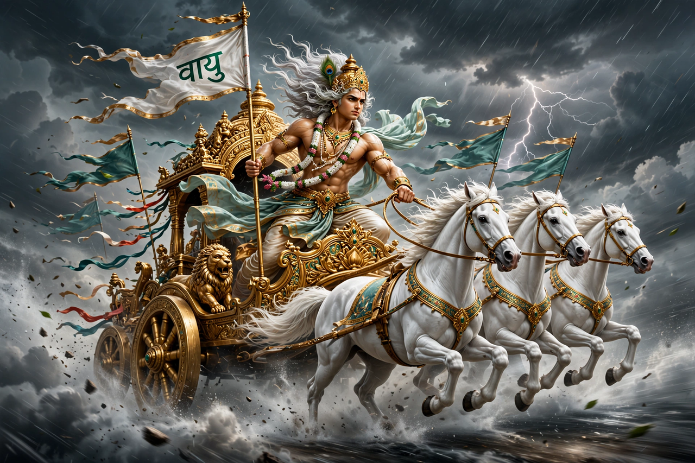

From Wikipedia, the free encyclopedia
| Vayu | |
|---|---|
| Affiliation | Hinduism; god of the wind and breath |
| Equivalents | Father of Hanuman and (spiritually) of Bhima |
| Vehicle | A chariot drawn by swift horses (or antelope in later art) |
| Domain | Wind, air, breath (prana), the northwest direction |

Vayu (Sanskrit: वायु) is the Hindu god of the wind — the breath of the world and of the body, the swift messenger among the gods of the Rigveda, and in later tradition dikpala (guardian) of the northwest. The hymns praise his rushing chariot, heard before it is seen, whose roar is the wind's: he touches the sky, wakes the dawn, and in his cosmic aspect is the air that fills the space between earth and heaven. In the Upanishadic identification, Vayu is prana at large — the same breath that, in the famous contest of the faculties, the other senses acknowledge as the life on which they all depend.
Vayu's mythology lives mostly in his sons. He is the divine father of Hanuman — the monkey god's wind-swift speed and flight are his inheritance — and the spiritual father of Bhima, the mightiest of the Pandava brothers in the Mahabharata, whose strength and temper are the storm's. Through them the wind god stands behind two of the most beloved figures of the epics: the servant whose breath is devotion and the warrior whose breath is force. His Iranian cousin Vayu, in the Avesta, is a more ambiguous power of the space between worlds, worshipped by heroes for victory — a reminder that the wind was a god before it was weather in both branches of the Indo-Iranian world.